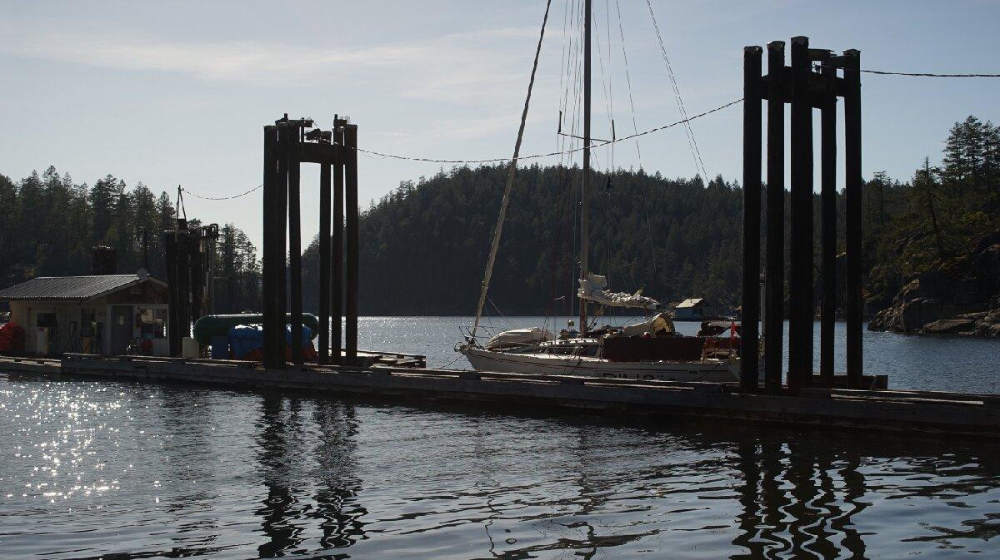

refuge cove

What we refer to on this page as Refuge Cove is on the traditional, stolen, unceded land of the Klahoose, Homalco, and Tla’amin First Nations people.
We stop in Refuge Cove a lot, to buy fresh vegetables, fuel, propane, to fill our water tanks, or to get good cell service.
The earliest we visited was on May 10th to buy extra fuel for our trip north to us se alaska. There aren't many places to fuel up in the area, so stopping here is a must. We've been here many times before, but because we were still in the shoulder season it was not nearly as chaotic. The store wasn't open, and water not yet offered. The fuel dock was only active 3 days a week at this time of the year, for 3 hours(1300-1500).
In the high season, coming to Refuge Cove is stressful, there is a lot of shuffling because most people only stop to take advantage of the 4 free hours of courtesy moorage. Moorage comes on a first-come first-served basis, there are no reservations. We are grateful that there aren't, we've always had room when coming here to re-supply, even in early August(the busiest time).
There is a lot of dock space, spots free up quickly, but nagivating to what looks like a spot large enough to fit your boat,, then getting there, realizing it isn't and having to reverse while someone docked ahead decides to leave, all while a power boat is coming in hard and generating wakes with a float plane landing at its rear, makes for a really... intense experience. In the height of summer, Refuge Cove is a circus. It's a very useful stopover, but it's more pleasant in early June(the store opens June 1st).
Refuge Cove has everything. They offer showers, laundry, a limited selection of fresh and shelf stable food, water(good quality), a few hardware store items, propane and fuel(gas and diesel). The produce is not too cheap, but they have a good variety, with better selection than at Squirrel Cove across the channel, but less than a fully-stocked grocery store(for that, it is best to go to heriot bay, Refuge has new produce every Tuesday).
Overnight moorage is affordable at 1.30$ per foot(2024), they offer power, but not at every slip, and anyways it doesn't always work and we suspect that they will stop offering it very soon (we've never hooked up). It's possible to anchor here, we've seen people do it, but it's very deep, and with the free 4 hours of courtesy moorage it seems unncessary.
A floating barge not too far from the Refuge Cove dock accepts garbage for a fee (we haven't done it).